Copper Pipe
1/2" copper piping, cut into two lengths: 1 m and 25 cm. Why does it look like the long one is more than 1 m? I dunno. Maybe I hadn't cut it yet.
I used these lengths because Hilsch (see the reference on the main page) says that the long run should be 50 times the diameter of the piping. I used 1/2" piping, and that told me to use about 64 cm. I then added more length for the purposes of overkill (piping is cheap).
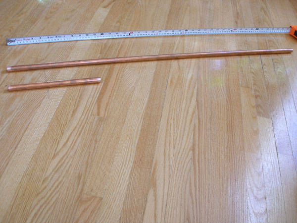
Sweat-to-Thread Coupling
One 1/2" sweat-to-thread (male) coupling. The term "sweat" means solder; for example, a sweat connection is a soldered connection.
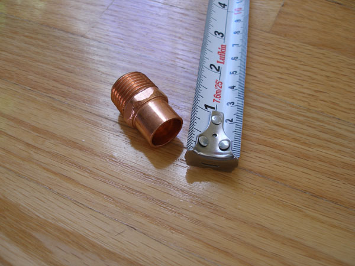
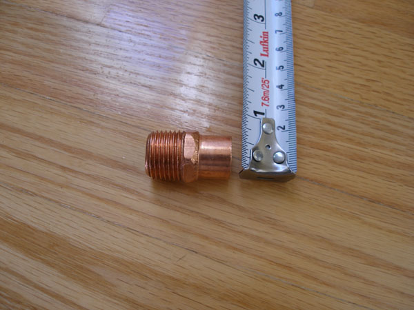
Washer
One washer—3/4" O.D., 6.5 mm I.D. (sorry for the mixed units).
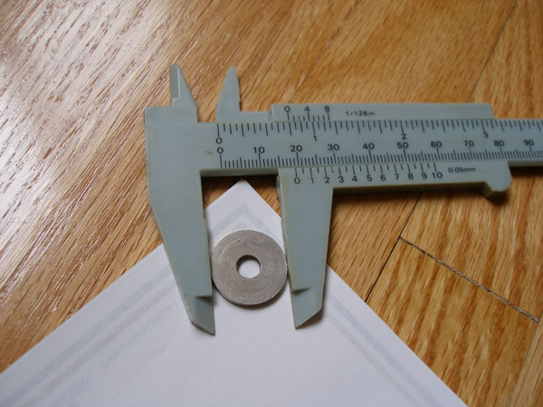
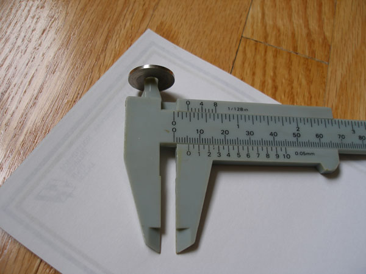
Re-makeable Coupling
One 1/2" re-makeable threaded coupling (sweat to pipe at both ends). The lint on the floor is not part of the design.
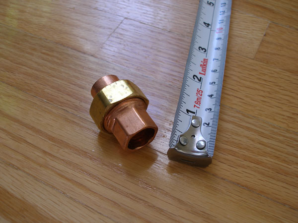
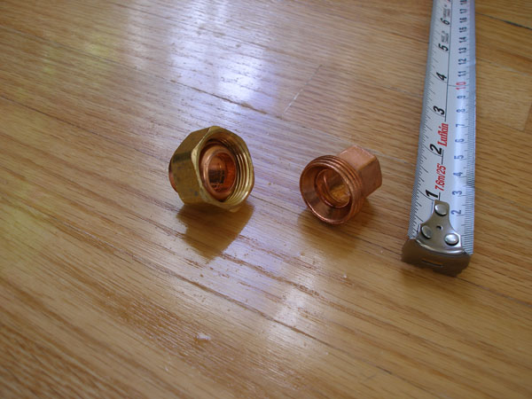
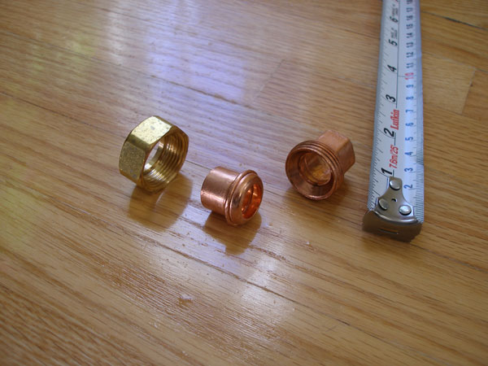
Air-Inlet Tubing
1/4" O.D. (1/8" I.D.) copper tubing. Length does not matter. I used a 7" piece.
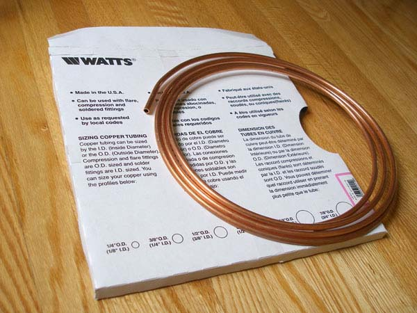
Ball Valve
One 1/2" ball valve.
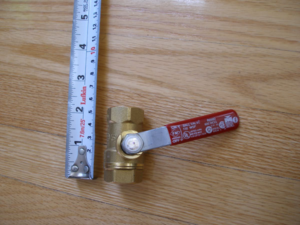
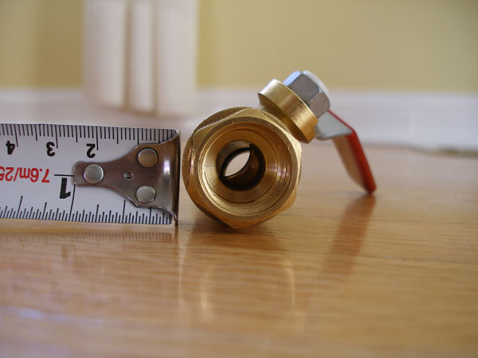
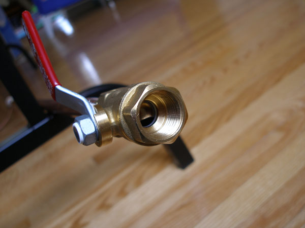
Compressed-Air Connector
One compressed-air quick connector, shown here already connected to tubing.
Also, one compression fitting for attaching the quick connector to the tubing. You just tighten it on with wrenches.
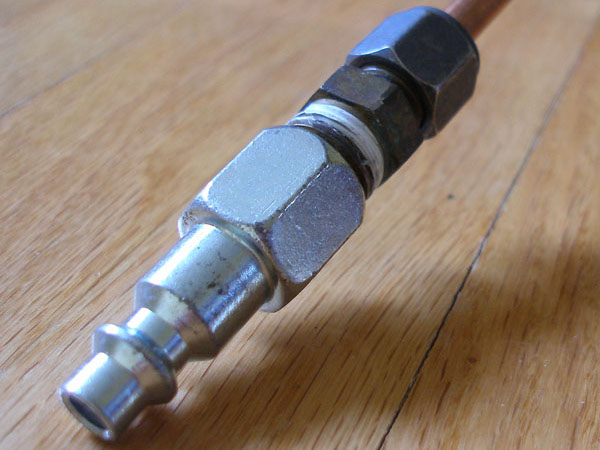
Air Compressor
An air compressor. I used my dad's.
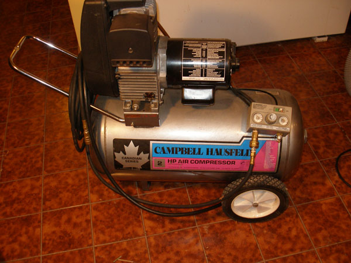
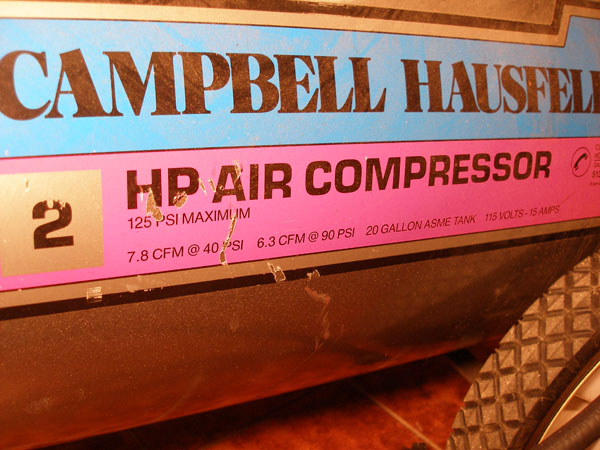